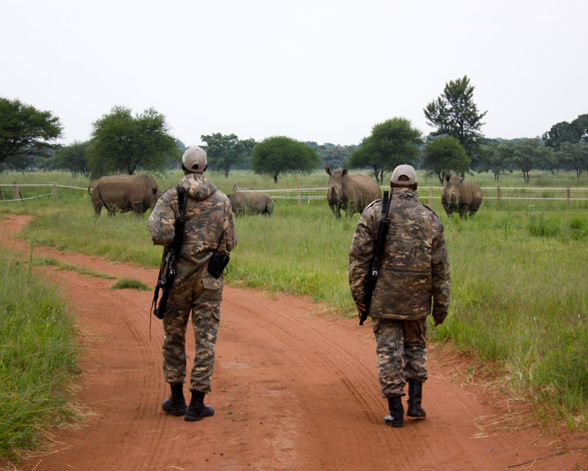

🛰️ Combating Poaching Through Laws and Surveillance Technology
Poaching remains one of the most urgent threats to global biodiversity. From elephants targeted for ivory to rhinos hunted for their horns, the illegal wildlife trade decimates species, destabilizes ecosystems, and fuels organized crime networks.
Why Anti-Poaching Enforcement Matters
Poaching isn’t just about wildlife loss—it’s a security, economic, and ethical crisis. Endangered animals play critical roles in maintaining ecosystem balance. When these species disappear, the ripple effects can disrupt entire habitats and the communities that depend on them.
Laws alone aren’t enough. Without proper enforcement, poaching syndicates continue to operate unchecked. That’s why today’s conservationists are combining strong legal frameworks with cutting-edge technology.
Tech as a Tactical Tool
From real-time tracking to predictive modeling, technology is transforming the way we protect wildlife. Surveillance tools allow rangers and researchers to act faster and more effectively.
Eye on the wild: a motion-triggered camera captures a rare black rhino in a secure Kenyan reserve.

The fusion of ecology and data science opens the door to scalable restoration projects. This allows reforestation to happen faster, smarter, and in places once thought unreachable.
🌍 Local Guardians, Global Tech
Technology is only as strong as the people behind it. Across Asia, Africa, and South America, local rangers and community volunteers are trained in using drones, digital mapping tools, and real-time apps to report threats and track species.
Their knowledge, paired with international software systems, is building a defense network that’s smarter, faster, and more resilient than ever.
Every animal saved is a signal: the tide is turning in favor of conservation. Poaching may be illegal—but stopping it is a shared responsibility powered by law, tech, and global will.